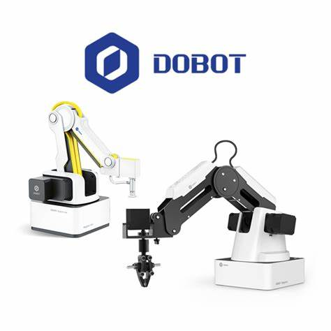

See Personal Projects
Robotic Arm Gesture Control
This research focused on utilizing the Dobot Magician robotic arm with AI-driven hand-tracking
technology to provide affordable options for hazardous material handling, as well as educational
demonstations of AI enhanced technology. The system allows for intuitive control using hand gestures
on camera, offering applications in hazardous material handling and remote operations. The project explores
real-time interaction challenges and proposes innovative solutions for gesture-based robotics control.
Read the Full Publication (PDF)